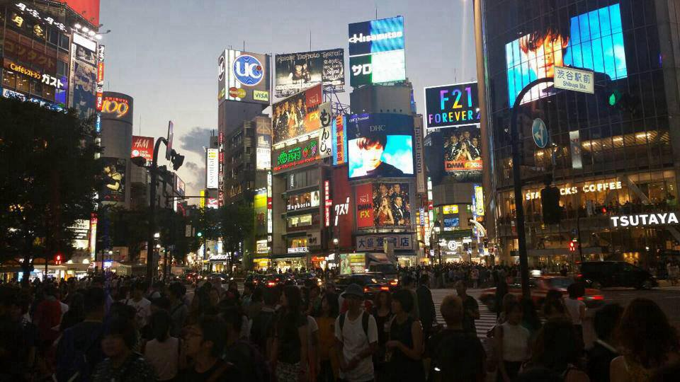
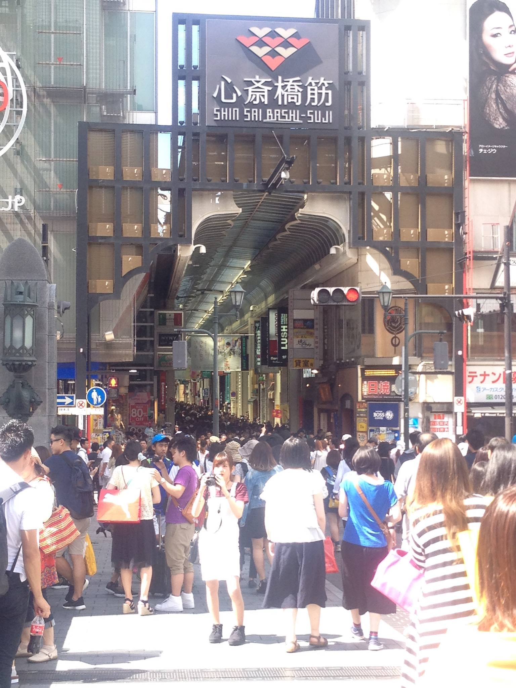
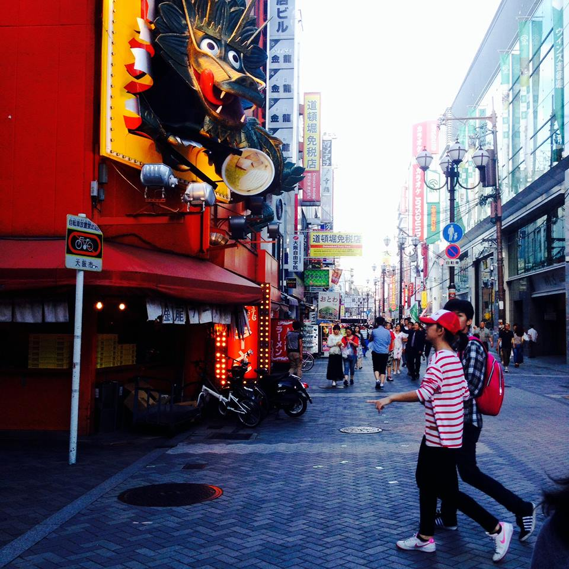
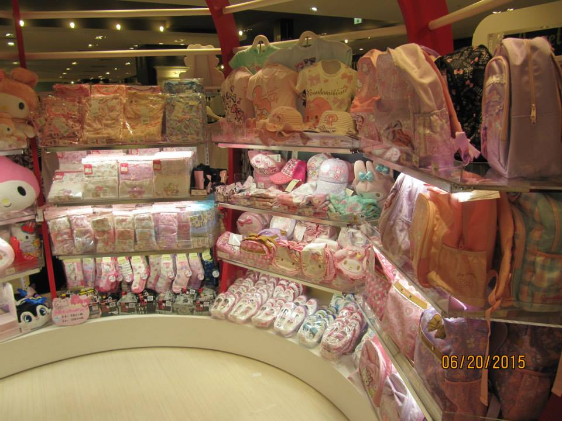
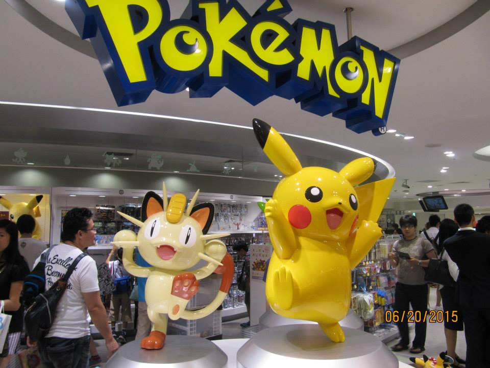

Shibuya
One of the most famous streets in the world. Everywhere you look around there are great places to eat and lots of shopping centers! This is the intersection where there are more people than cars. All 4 lights turn off so that all the people can get across the streets.

Shin Sai Bashi-Suji
This is also a very populated center where a lot of the youngsters spend their time. There are lots of yummy street food, also restaurants, and of course tons of various stores. As you can tell from the picture, it gets very crowded, but that's one of the great things about this place!
Fushimi Inari-Taisha Shrine
This beautiful shrine is so vast and very peaceful. It sits at the base of a mountain and is 4kilometers long. When you walk through, it feels like you are in a magical place.

A Pretty Street
A street near Shin Sai Bashi area. There were so many cool displays in front and on top of the restaurants advertizing themselves.

Dotonbori
Posing with the Glico Man. There were so many entertainments and so many delicious restaurants and beautiful scenery here.
Osaka University
At Osaka University in my class, practicing for my recitation that we had to do everytime we finished a chapter. This class holds a lot of memories for me, and I really miss it!!
Fushimi Inary Shrine
At the Fushimi Inari Shrine's purification fountain.
Miki and I
I made tons of friends when I got to Japan and I am so grateful! Miki was one of my friends that helped me out a lot!(: I miss her a lot, and I hope one day we can meet again!
Ramen
Eating ramen while standing!

Store
There were so many kawaii (cute) things in Japan, and I wanted to buy them all if I could have!!

Pokemon Center
My friend really wanted to go to Pokemon Center, so we had to look up where it was and we rode the bus and the monorail to get to where we wanted. Even though we had no idea what people were saying, or what the signs were saying, we were still able to manage and travel a lot!!
The end of my Journey
I think this picture represents the end of my journey really well! I had almost no idea what the characters meant, but I kept exploring and moving on with my friends, and I think that is what made it so fun! I think going to Japan revived my will to continue living life to the fullest!!! I really miss Japan!

{kind=link}
{kind=link}
{kind=link}
{kind=link}
{kind=link}
{kind=link}
{kind=link}
{kind=link}
{kind=link}
{kind=link}
{kind=link}